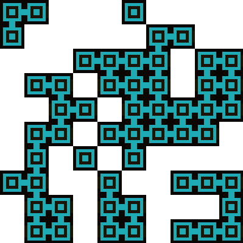

オートタイル
実行例
 実行結果を見る
ソースコード
TypeScript
{kind=link}
解説/アルゴリズム
マップデータが入った二次元配列を用意して、その配列の値をもとに一つのタイルマップ画像を使用してタイルを配置すると上記のようになります。
（0 = 非表示, 1 = 表示）
ここでオートタイルというアルゴリズムを使用すると並べ方に応じてタイル間の繋がりを自然に見せることができます。
具体的なアルゴリズムを見てみましょう。
タイルの周りにある 4 方向、つまり上下左右に1, 2, 4, 8の番号を振っておきます。
これはどのように振ってもらっても構いません。
解説では下記のように方向を振ります。
| 方向 | 値 |
|---|---|
| 上 | 1 |
| 右 | 2 |
| 下 | 4 |
| 左 | 8 |
二次元配列の全ての要素を走査します。
その際、自分の周りにある 4 方向の要素に 1 が入ってたら、先程決めた方向の値に変換して足し合わせます。
下記が値の例となります。
- 上にタイルがある場合 = 1
- 右にタイルがある場合 = 2
- 上と右にタイルがある場合 = 1 + 2 = 3
すべてのパターンは下記のとおりとなります。
| 方向 | 値 |
|---|---|
| 無し | 0 |
| 上 | 1 |
| 右 | 2 |
| 上 + 右 | 3 |
| 下 | 4 |
| 上 + 下 | 5 |
| 右 + 下 | 6 |
| 上 + 右 + 下 | 7 |
| 左 | 8 |
| 上 + 左 | 9 |
| 右 + 左 | 10 |
| 上 + 右 + 左 | 11 |
| 下 + 左 | 12 |
| 上 + 下 + 左 | 13 |
| 右 + 下 + 左 | 14 |
| 上 + 右 + 下 + 左 | 15 |
上記の 16 パターンに対応したタイル画像を用意します。
左から順番に値 0 の画像、値 1 の画像、値 2 の画像…と並べていきます。
値に対応している方向に応じて画像を作る必要があります。
例えば左側 2 番目、つまり値 1 に対応した画像ですが、これは上方向だけ繋がっているパターンですので、上方向だけ開けた画像にしなければなりません。
コード解説
function updateTile(x: number, y: number): void {
// 上下左右に壁があるかどうかを確認して方向の値を足してゆく
let index = 0;
if (0 <= y - 1 && getCell(x, y - 1) === CellType.wall) {
index += 1;
}
if (x + 1 < cellWidth && getCell(x + 1, y) === CellType.wall) {
index += 2;
}
if (y + 1 < cellHeight && getCell(x, y + 1) === CellType.wall) {
index += 4;
}
if (0 <= x - 1 && getCell(x - 1, y) === CellType.wall) {
index += 8;
}
// タイル画像から上記で計算した値に対応する画像を切り出して表示する
p.copy(
chip,
index * chipWidth,
0,
chipWidth,
chipHeight,
x * tileWidth,
y * tileHeight,
tileWidth,
tileHeight
);
}